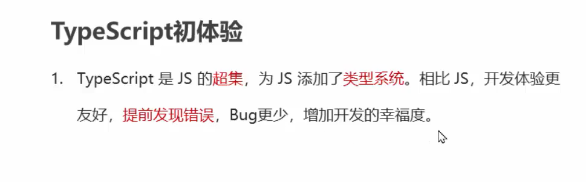
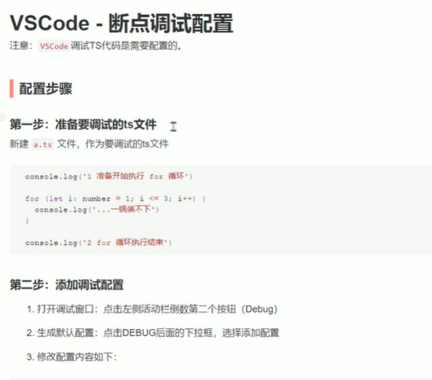
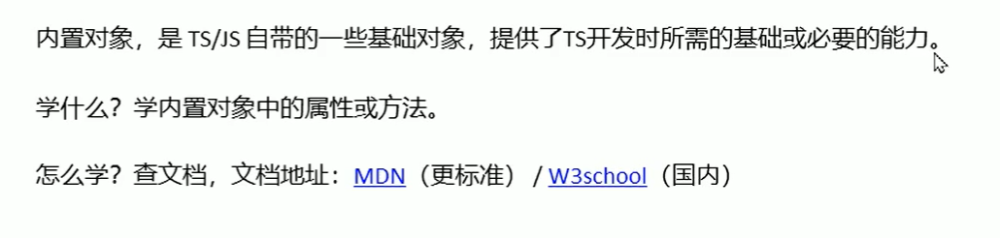
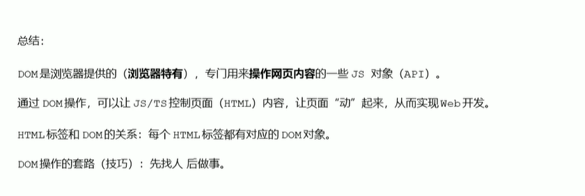

typescript学习笔记
typescript
1.typescript的优点

变量的初始化
1 | let age:number = 18 ; |
cls实现终端内容清除
分号结尾可选！！！！！
2.五种数据类型
字符串推荐使用单引号
数组也属于object类型
3.运算符
特殊情况强制变换
加号的神奇应用
4.语句
三元运算符
根据条件判断赋值结果
循环语句
记得在for（）里就声明i的数据类型，TS中===表示相等
5.断点调试
6.断点配置

7.数组
1 | let names:string[] = [] 这是定义一个字符串数组 |
数组的存值
先取值再赋值 = 存值
遍历数组
1 | let nums:number[] = [100,200,300] |
找出数组最大值
1 | // let nums:number[] = [1,9,3,7,4,5,2,1,9] |
1 | let nums:number[] = [12,0,54,36,25,19,50,0,3,0,45,0] |
8.函数
return是函数的一个重要返回
没有名称的函数叫匿名函数
当一个方法的参数是函数时，这种函数也称为回调函数。
参数
形参与实参
形参声明要表明类型
函数返回值
如果一个函数没有返回值，默认返回void
若要返回值，则定义函数的时候要声明返回类型
return的说明
函数调试
变量作用域
9.对象
一组属性和方法的集合，并且是无序的.
属性（特征）方法（行为）
如果一个函数是单独出现的，没有和对象关联，我们称之为函数，否则称为方法
对象的类型注解
需要注意，一个是分号一个是冒号，分号可以省略
1 | let person:{ |
对象方法的类型注解
对象的存取值
属性叫访问，
方法叫调用
console.log就是调用console对象的log方法
内置对象

10.接口
接口就是给对象的类型注解命名并方面以后复用，接口的名称一般以大写字母I开头，函数一般以动词为开头
1 | //创建一个接口 |
11.数组内置对象
数组的常用操作：添加，删除，遍历，过滤
数组的常用方法
push
forEach

注意，forEach是根据你数组的长度去决定你到底要执行多少次，省略了计算器i和判断条件
1 | let nums:number[] = [1,2,5,4,12] |
缺点：无法中间停止，效率低，遍历整个数组
some
12.类型推论
当你初始化变量并赋值时，类型注解可以省略，ts会自动根据等号右侧的的数据类型赋予
决定函数返回值类型的时候。由于类型推论会根据return返回的数据类型判断
以上情况可不用声明类型注解，能省略就省略，为了开发效率
12.5类型断言
使用类型断言手动指定更加具体的类型
语法：
1 | let img = document.querySelector('#image') as HTMLImageElement |
技巧：通过console.dir（）打印DOM元素，在属性的最后面，即可以看到该元素的类型
返回结果
13.开发注意
1 | <img src="./a.jpg" alt="" /*alt是展示错误信息的*/ |
浏览器只能运行JS代码，无法直接运行TS，要转化，使用命令
tsc index.ts 转化
tsc –watch index.ts 用这指令可以启用监视模式，重新保存ts文件会自动转化为js，避免重复繁琐转化
14.DOM操作

获取元素
1.
1 | document.querySelector(selector) |
2.
1 | document.querySelectorAll(selector) |
操作文本内容
操作样式
1 | dom.classList.add('b','c')添加类名 |
监听事件
1 | dom.addEventListener() |
操作对象
event是回调函数的参数，是事件的对象，有type和target等属性
移除事件
1 | dom.removeEventListener() |
可以先调用再声明
若要把回调函数抽出来，必须声明event对象的类型，即event.type
15.游戏开发
1.通过html的标签中的ID来找到对应的DOM元素，然后再通过，修改class类来达到简易修改dom元素
枚举是组织有关联数据的一种方式（比如x和o就是有关联）
使用场景：当变量的值只能是几个固定值中的一个，应该用枚举
JS没有枚举，TS有
enum 枚举名称 {X,O }
枚举名称和成员都是大写开头
1 | enums Gender {Female,Male} |
字符串枚举没有自增长行为，因此，每个成员必须有初始值
总结：枚举是一组有名字的常量（只读）的集合
开发过程重要思想
1.可以先把要实现的功能作为注释写在上面并且以此搭好框架，一步步实现功能
2.无论如何，功能的实现是最重要，先把功能实现了，再去优化代码或者是抽离代码，当然，一开始可以抽离也行，但不容易构思问题的实现
16复习优化代码
显示过的不能在悬浮显示